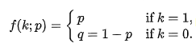
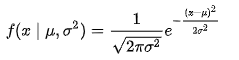
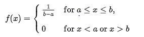
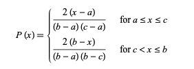
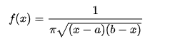
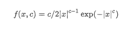
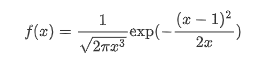
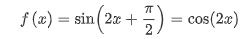

Distributions
In probability theory and statistics, a probability distribution is a mathematical function that provides the probabilities of occurrence of different possible outcomes in an experiment. In more technical terms, the probability distribution is a description of a random phenomenon in terms of the probabilities of events.
Probability distributions are generally divided into two classes. A discrete probability distribution (applicable to the scenarios where the set of possible outcomes is discrete, such as a coin toss or a roll of dice) can be encoded by a discrete list of the probabilities of the outcomes, known as a probability mass function. On the other hand, a continuous probability distribution (applicable to the scenarios where the set of possible outcomes can take on values in a continuous range (e.g. real numbers), such as the temperature on a given day) is typically described by probability density functions (with the probability of any individual outcome actually being 0). The normal distribution is a commonly encountered continuous probability distribution. More complex experiments, such as those involving stochastic processes defined in continuous time, may demand the use of more general probability measures.
Distributions we implemented:
Bernoulli
Normal
Uniform
Triangular
Arcsine
Exponential

Double Weibull
Wald
Anglit
Step 1
Choose your distributions and its size
Step 2
Complete step 1 first
Enter required data
Scroll for footer